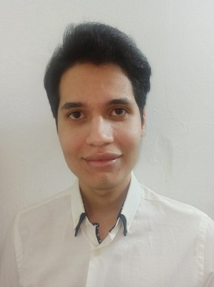
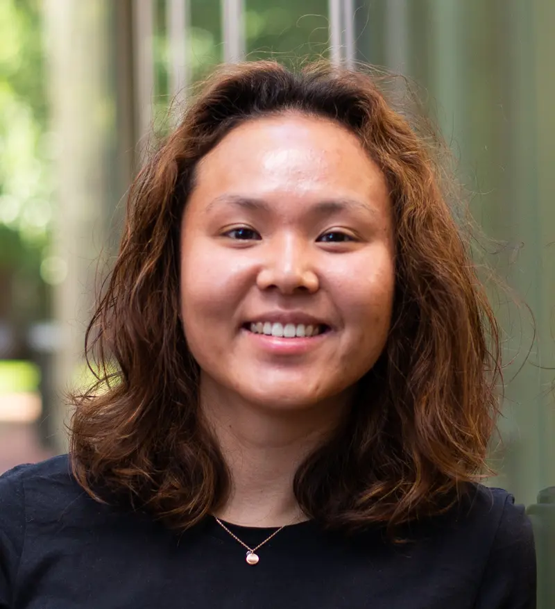
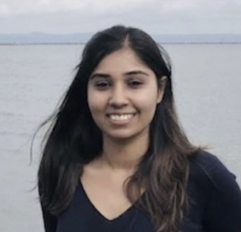
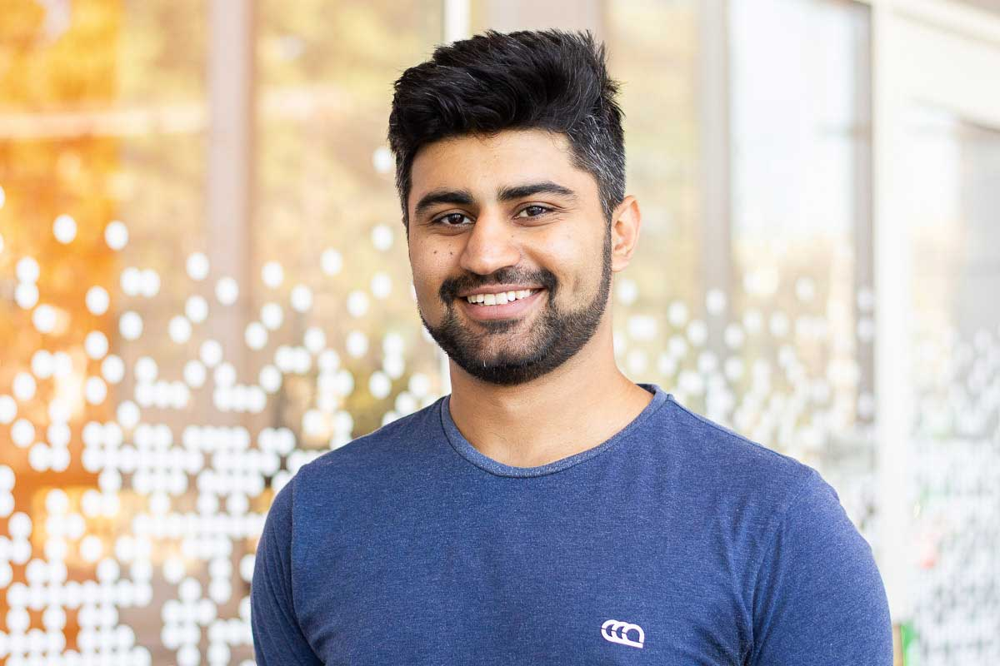

Advising
Current PhD Students
◄ SELECT YOUR CHARACTER ►

PhD Alumni
-

Alberto Mario Ceballos-Arroyo 2026Improving the detection of aneurysms in 3D radiology scans through anatomically-informed deep learning► Postdoc, Cornell -

Hye Sun Yun 2026Advancing Health Information Access with LLMs► Assistant Professor of Data Science Program and CS (TT), Lafeyette CollegeKhoury College PhD Teaching Award -

Sanjana Ramprasad 2026Rethinking Factuality Assessment: Characterizing and Evaluating Hallucinations Across Specialized Domains► Postdoc, Stanford -
Chantal Shaib 2026What Makes Large Language Model Text Distinct? Lexical and Syntactic Markers of Style► Postdoc, MITOutstanding PhD Research Award
-

Somin Wadhwa 2025From Large to Small: Distillation in the Age of Large Language Models► Applied Scientist II, Core AI @ Qualtrics -
Jay DeYoung 2024Automation Assistance For Systematic Reviewers► Young Investigator at the Allen Institute for AI (AI2)
-
Denis Jered McInerney 2024An Interface for Clinicians: Finding Crucial Information with Language Models► Principal Research Scientist at CodaMetrix
-
Ben Nye 2022What Does the Evidence Say? Automatic Information Extraction from Medical Trial Reports► Assistant Professor of CS (TT), Colorado CollegePhD Teaching Award
-
Sarthak Jain 2022The Model thinks What?! Interpreting Deep NLP models with Rationales and Influence► ML Scientist at Profluent
-
Ye Zhang 2019Neural NLP Models Under Low-Supervision Scenarios► Google DeepMind
-
An Nguyen 2019Probabilistic Modeling with Human Factors in Machine Learning